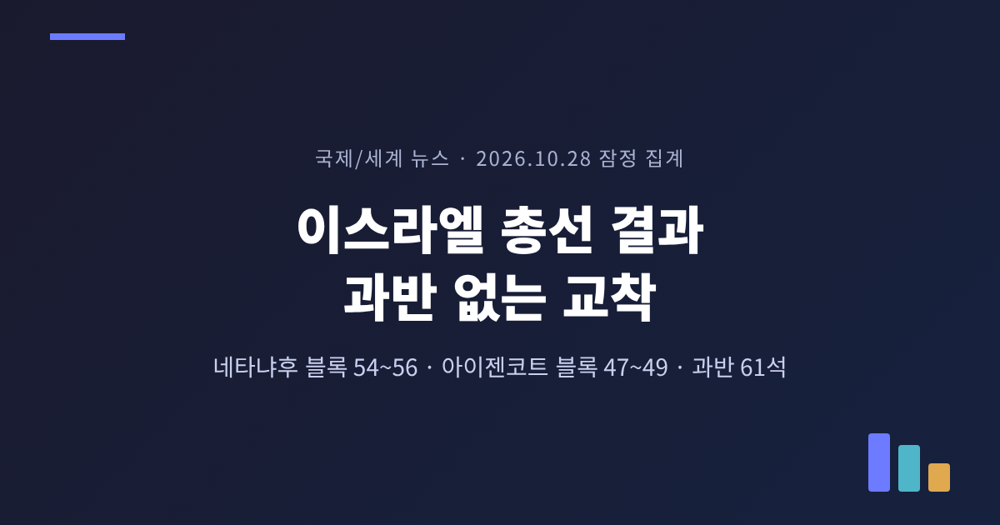
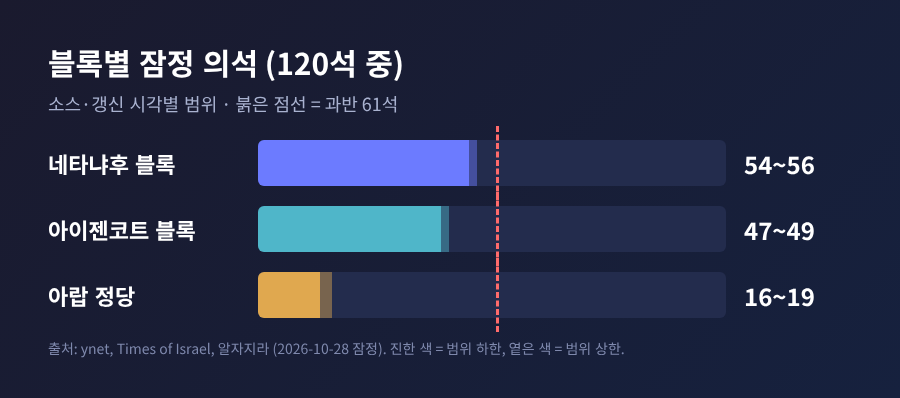
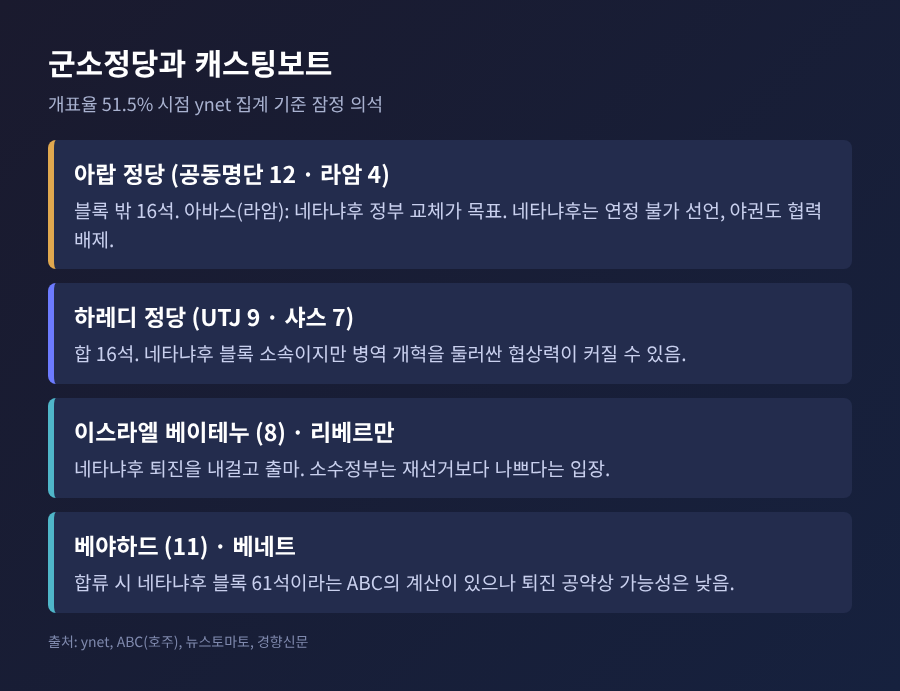
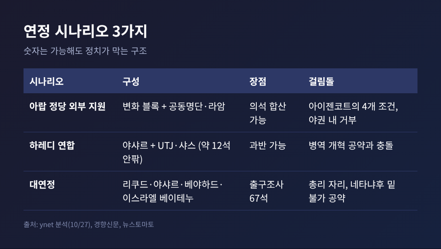
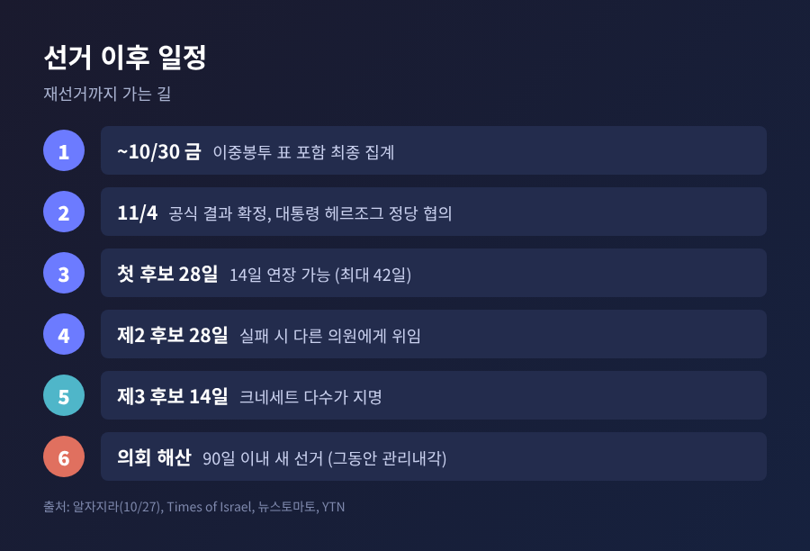
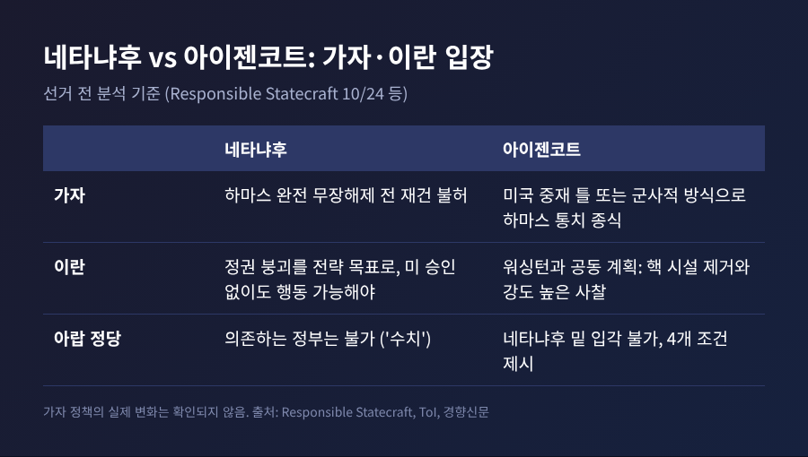

3줄 요약 - 10월 27일 이스라엘 총선에서 네타냐후 블록과 아이젠코트 블록 모두 과반 61석에 못 미치는 잠정 결과가 나왔습니다. - 28일 낮까지의 집계로 네타냐후 블록은 54~56석, 아이젠코트 블록은 47~49석, 아랍 정당은 16~19석입니다. 개표가 끝나지 않은 잠정치입니다. - 공식 결과는 11월 4일 예정이며, 이후 대통령 위임과 연정 협상, 최악의 경우 재선거까지 이어질 수 있습니다.
이번 글에서는 이스라엘 총선 결과가 어떻게 교착으로 이어졌는지 정리해 보겠습니다. 양측의 입장과 군소정당의 위치, 그리고 가자·이란·미국 관계에 미칠 영향까지 차례로 살펴봅니다. 모든 수치는 28일 시점의 잠정 집계이며 소스마다 갱신 시각이 달라 차이가 있습니다.
27일 치러진 선거는 120석 전체를 새로 뽑는 총선이었습니다. 크네세트는 7월 17일 4년 임기를 채우고 해산했습니다. 그 사이 하레디(초정통파) 병역 문제를 둘러싸고 연정이 여러 차례 흔들렸습니다.
투표율은 잠정 77.7%로 1999년 이후 가장 높았습니다. 2022년보다 약 7.1%포인트 올랐습니다. 알자지라는 해외에서 귀국해 투표한 이스라엘인이 6만 명을 넘는다고 전했습니다.
출구조사는 양쪽이 엇비슷하다고 보았습니다. 알자지라에 따르면 두 주요 블록이 51 대 51로 맞섰습니다. 투표 마감 직후에는 아이젠코트가 이끄는 변화 블록이 근소하게 앞선다는 해석이 많았습니다.
개표가 진행되자 흐름이 달라졌습니다. 이스라엘 매체 ynet이 개표율 51.5% 시점에 전한 집계는 이렇습니다. 리쿠드 27석, 아이젠코트의 야샤르 21석, 공동명단 12석, 베네트의 베야하드 11석입니다. 민주당과 통합토라유대주의(UTJ)가 각각 9석, 이스라엘 베이테누 8석, 샤스 7석입니다. 오츠마 예후디트와 종교시온주의-제후트는 각각 6석, 라암은 4석으로 잡혔습니다.
이를 블록별로 묶으면 네타냐후 블록 55석, 아이젠코트 블록 49석, 아랍 정당 16석입니다. 알자지라가 개표 76% 이상 시점에 전한 수치는 54석, 47석, 19석이었습니다. 숫자는 조금씩 다르지만 어느 시점에도 61석에 닿은 쪽은 없었습니다.

가장 먼저 눈에 띄는 것은 상황의 역설입니다. 유권자의 표심이 네타냐후에게 우호적이지 않았다는 해석이 나오지만, 새 정부가 서기 전까지는 네타냐후가 관리내각 총리로 남습니다. 호주 ABC의 라우라 팅글 편집장은 이를 두 가지 아이러니 가운데 하나로 짚었습니다.
두 번째 아이러니는 아랍 정당입니다. 아랍 정당은 현재 10석 안팎에서 16~19석으로 늘어날 것으로 보입니다. 두 블록 모두 이들 없이는 61석을 만들기 어렵습니다. 그러나 유대계 주요 정당은 오랫동안 아랍 정당을 연정 파트너로 받아들이지 않았습니다.
여기에 이중봉투 표라는 변수가 남아 있습니다. 군인과 예비군, 외교관, 입원 환자 등의 표로 60만~65만 표가 예상됩니다. ynet은 약 15석에 해당하는 규모라고 설명했습니다. 과거에는 시온주의 정당에 유리하게 작용했다고 합니다. 확인은 금요일까지 걸릴 수 있습니다.
네타냐후는 예루살렘 리쿠드 본부에서 우파 블록이 시온주의 유권자 사이에서 "결정적 다수"를 얻었다고 주장했습니다. 리쿠드가 최대 정당이라는 점도 강조했습니다. 다만 "진짜 결과"를 기다리겠다며 승리를 단정하지는 않았습니다. 아랍 정당에 기대는 정부는 받아들일 수 없다는 입장도 분명히 했습니다.
아이젠코트는 정반대로 읽었습니다. 그는 "대중이 변화를 선택했다"며 네타냐후의 퇴진을 촉구했습니다. 선거 전부터 네타냐후 밑에서는 총리도 장관도 맡지 않겠다는 뜻을 밝혀 왔습니다.
선거 당일에도 설전이 있었습니다. 네타냐후는 아랍 유권자들이 투표소로 몰려간다고 말했고, 야샤르는 결과에 불복할 명분을 쌓으려는 것이라고 반박했습니다. 공동명단의 유세프 자바린은 네타냐후가 아랍 시민을 겨냥해 선동한다고 비판했습니다.
한쪽의 승리 선언을 그대로 받아들이기는 어렵습니다. 리쿠드는 단일 정당으로는 가장 많은 의석을 얻었습니다. 하지만 블록 전체로는 과반이 아닙니다. 양측의 주장이 각자의 기준에서는 모두 사실인 셈입니다.

ynet 분석이 짚은 경우의 수는 크게 세 가지입니다.
첫째는 변화 블록이 아랍 정당의 외부 지원을 받는 길입니다. 숫자는 가능해도 아이젠코트가 내건 조건, 이를테면 이스라엘의 유대 국가 정체성 인정과 하마스의 테러단체 규정을 아랍 정당이 받아들이기 어렵습니다. 야권 안에서도 베네트 등이 아랍 정당과의 협력을 배제해 왔습니다.
둘째는 아이젠코트가 하레디 두 정당과 손잡는 길입니다. 합치면 과반이 가능하지만, 병역 개혁을 약속해 온 쪽과 그 반대편이 한 배를 타야 합니다. 하레디 정당의 협상력만 커질 수 있습니다.
셋째는 리쿠드, 야샤르, 베야하드, 이스라엘 베이테누를 묶는 대연정입니다. 출구조사 기준 67석으로 숫자는 가장 쉽습니다. 그러나 누가 총리를 맡느냐에서 부딪힙니다. 야권은 네타냐후 밑에서 일하지 않겠다고 공약했습니다.
네타냐후 진영이 야권 일부를 끌어오는 방안도 있습니다. ABC는 베네트의 정당이 11석을 얻어 합류하면 61석이 된다고 계산했습니다. 하지만 베네트와 리베르만은 네타냐후 퇴진을 내걸고 선거를 치렀습니다. 리베르만은 소수정부가 재선거보다 나쁘다고까지 말했습니다.
대통령 헤르조그가 통합 정부를 선호한다는 보도는 선거 전 ynet에서 나왔지만, 대통령실은 어느 후보와도 논의한 적이 없다며 전면 부인했습니다. 확인되지 않은 이야기라는 점은 분명히 해 둡니다.

공식 결과는 11월 4일 확정될 예정입니다. 그 뒤 헤르조그 대통령이 각 정당 대표와 협의합니다. 이어 정부를 가장 잘 꾸릴 수 있다고 판단하는 인물에게 조각을 맡깁니다. 최대 정당 대표여야 하는 것은 아닙니다.
첫 후보에게는 28일이 주어지고, 14일을 연장할 수 있어 최대 42일입니다. 실패하면 다른 의원에게 28일, 그 뒤 크네세트 다수가 지명한 제3의 후보에게 14일이 돌아갑니다. 그래도 안 되면 의회가 해산되고 90일 안에 새 선거가 열립니다. 그동안 네타냐후 정부는 관리내각으로 남습니다.
신임투표는 단순 과반으로 충분하기 때문에, 일부 정당이 기권하면 61표에 못 미쳐도 통과될 수 있습니다. 소수정부나 총리 교대 합의도 선택지로 거론됩니다.
예전엔 한 번의 투표로 정부가 섰습니다. 지금은 교착이 낯설지 않습니다. 2019년 4월부터 2020년 3월까지 선거가 세 차례 치러졌고, 2019년부터 2022년까지는 다섯 차례였습니다. 2020년 네타냐후와 간츠의 교대 합의도 예산 문제로 약 1년 뒤 무너졌습니다.

선거 전 분석을 보면 두 후보의 방향은 다릅니다. 리스판서블 스테이트크래프트의 분석에 따르면 네타냐후는 하마스가 완전히 무장해제되기 전에는 가자 재건을 허용하지 않는다는 입장입니다. 아이젠코트는 미국이 중재한 틀 안에서든 군사적으로든 하마스 통치를 끝내겠다고 공약했습니다.
이란에서는 접점도 있습니다. 네타냐후는 이란 정권의 붕괴를 전략 목표로 보고 미국 승인 없이도 움직일 수 있어야 한다는 입장입니다. 아이젠코트는 워싱턴과의 공동 계획을 내세우며 핵 시설 제거와 강도 높은 사찰을 말합니다. 아이젠코트 역시 이란을 큰 위협으로 본다는 점에서 정권이 바뀐다고 곧바로 대이란 기조가 달라지지는 않을 수 있습니다.
변수는 미국입니다. 뉴스토마토가 인용한 CNN 보도에 따르면 네타냐후는 미국과의 공동 이란 공격을 원했지만 트럼프 대통령이 총선 전 공습에는 동의하지 않았습니다. 월스트리트저널은 미국이 걸프 국가들에 중간선거(11월 3일) 이후의 짧고 강한 군사 작전에 대비하라고 알렸다고 보도했습니다. 백악관은 민감한 군사 계획에는 논평하지 않으면서 "모든 옵션을 테이블 위에" 두고 있다고 밝혔습니다.
ABC는 이란과의 재충돌이 연정 협상에 영향을 주거나 전시 통합정부 논리로 이어질 수 있다는 불안이 이스라엘 안에 있다고 전했습니다. 이는 전망일 뿐 확정된 사실이 아닙니다. 가자 정책이 이번 교착 속에서 실제로 어떻게 바뀔지는 아직 확인된 바 없습니다.

지금 확실한 것은 세 가지입니다. 어느 블록도 61석을 얻지 못했다는 점, 아랍 정당이 변수로 떠올랐다는 점, 이중봉투 표와 11월 4일 공식 결과가 남아 있다는 점입니다.
지켜볼 대목은 이중봉투 표가 시온주의 정당에 얼마나 유리하게 작용하느냐입니다. 이어서 헤르조그가 누구에게 조각을 맡기는지, 베네트와 리베르만이 공약을 지키는지, 하레디 정당이 어느 쪽에 서는지가 관건입니다.
마지막으로 한 가지만 덧붙이겠습니다. 이 글의 수치는 모두 잠정치이고, 개표가 끝나면 한두 석의 차이가 정국의 방향을 바꿀 수 있습니다. 숫자보다 중요한 것은 그 숫자를 두고 누가 누구와 손잡을 수 있느냐입니다.
교착은 곧 끝날까요. 적어도 42일, 어쩌면 또 한 번의 투표가 지나서야 답이 나올 것입니다.
기준: 2026-10-28 잠정 집계. 출처: ynet, Times of Israel, 알자지라, ABC(호주), 경향신문, 뉴스토마토, YTN, Responsible Statecraft.